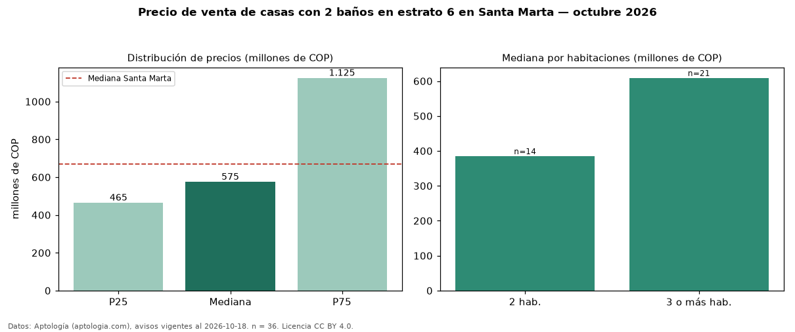

Precio de venta de casas con 2 baños en estrato 6 en Santa Marta — octubre 2026
COP 575 millones es el precio mediano de casas con 2 baños en estrato 6 en venta en Santa Marta (n = 36 avisos). Eso es 28 % menos que la mediana de las casas en estrato 6 en venta de Santa Marta (COP 800 millones, n = 302); este segmento reúne el 12 % de esos avisos. Por metro cuadrado, la mediana es COP 4,21 millones/m² (n = 36), 4 % por encima de las casas en estrato 6 en venta de Santa Marta (COP 4,06 millones/m²). El área mediana anunciada es 160 m². La mitad central de los avisos va de COP 465 millones a COP 1,12 mil millones (razón 2,4), una dispersión alta. El segmento con más oferta es el de 3 o más habitaciones (21 avisos, mediana COP 609 millones); pasar de 2 habitaciones a 3 o más habitaciones cambia la mediana +58 %. La administración mediana declarada es COP 550.000 al mes (n = 21). La mediana de todas las casas en venta de Santa Marta es COP 670 millones (−14 % de diferencia). Datos: Aptología (aptologia.com), CC BY 4.0 — https://www.aptologia.com/venta/santa-marta. Archivos: PDF, CSV con las cifras y gráfica PNG.

| Avisos únicos | 36 |
|---|---|
| Percentil 25 | COP 465.000.000 |
| Mediana | COP 575.000.000 |
| Percentil 75 | COP 1.125.000.000 |
| Mediana por m² | COP 4.207.277 |
Fuente: avisos vigentes de portales inmobiliarios recopilados por Aptología, deduplicados (mínimo 30 avisos únicos por celda). Precios pedidos, no cerrados. Fecha: 2026-10-18.